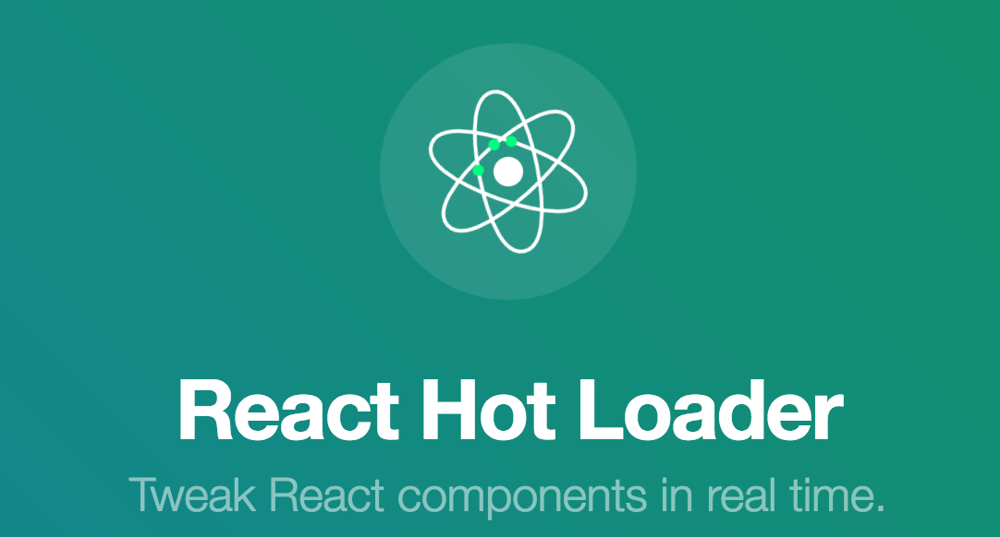
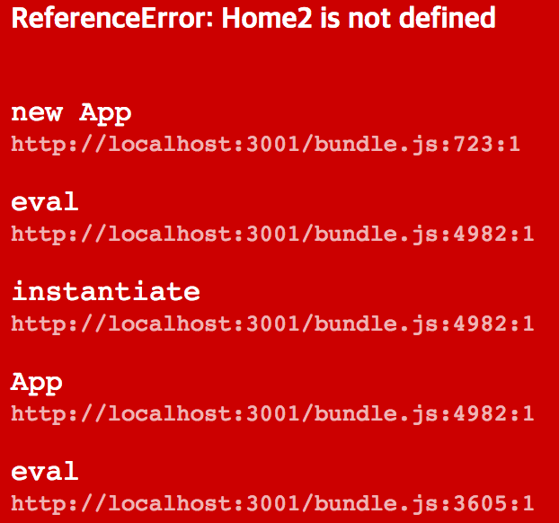
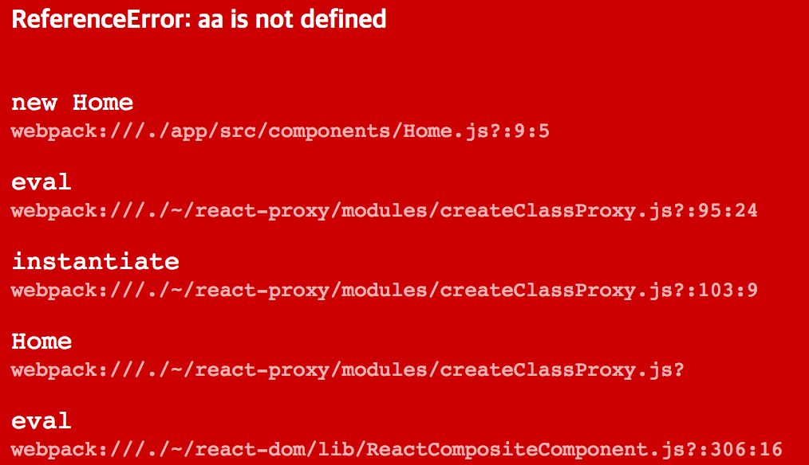

들어가기에 앞서
기본적으로 웹팩, 바벨, 리액트 라우터 등등은 안다는 전제 하에 글을 썼다.
웹팩 2에 대한 모르는 부분은 아래 글을 조금씩 참조하면 도움이 될 것이다.
또한 리액트 라우터 v4 예제로 진행할 것이므로 아래 포스트를 참고하고 소스 코드를 클론하자.
리액트 핫 로더 v1
지난 리액트 라우터 4 마이그레이션 포스트에서…
- 트리 쉐이킹
- 코드 스플리팅
- HTML5 History API
까지 구현해보았다.
이제 리액트의 컴포넌트를 Hot Module로 만들어서
페이지 새로고침 없이도 수정 결과를 반영해주는 react-hot-loader를 사용해보자!
리액트 핫 로더 v1 소스 코드에서 중간 중간 확인하면서 진행하도록 하자.
|
|
그리고 webpack.dev.config.js의 module 부분에서
js 파일의 로더에 react-hot-loader를 추가하자.
또한 리액트 핫로더 v1은 트리 쉐이킹을 사용하면 번들링에 실패하므로
.babelrc에서 다음과 같이 트리쉐이킹을 꺼주자.
그리고 테스트를 위해 About.js를 다음과 같이 함수형 컴포넌트에서 일반 클래스 컴포넌트로 바꿔주자.
npm start를 쳐서 webpack-dev-server를 띄우고
http://localhost:3001/about/name으로 접속해보자.
그 다음에 About.js를 수정해보면 페이지 새로고침 없이도 수정 내역이 잘 반영된다.
그럼 이번에는 함수형 컴포넌트인 Name.js를 수정해보자.
아마도 페이지가 새로고침 되면서 수정 내역이 반영될 것이다.
이렇듯 리액트 라우터 4와 리액트 핫 로더 1에서는 다음과 같은 문제점이 존재한다.
출처: Server-side rendering, code-splitting, and hot reloading with React Router v4
- No hot reloading for functional components
- Problems with high order components
HOC(High Order Components)는 뭔지 잘 몰라서 테스트 해보지 못했다.
v3으로 마이그레이션 해보자!
여튼 함수형 컴포넌트가 제대로 핫 로드 되지 않고, 트리 쉐이킹 문제점을
리액트 핫 로더 3에서는 해결했다고 하니 한번 믿고 설치해보자.
또한 중간 중간 리액트 핫 로더 v3 소스 코드와 비교해보자.
마이그레이션 문서를 보고 하나하나 따라해보자.
- 바벨 설정 파일(.babelrc) 수정하기 1234567891011121314151617{"presets": [["env",{"browsers": ["last 2 versions", "> 10%", "ie 9"],// tree shaking"modules": false}],"react"],"plugins": ["react-hot-loader/babel","syntax-dynamic-import"]}
플러그인에 react-hot-loader/babel을 추가하고, 트리 쉐이킹도 켰다.
혹은 바벨을 사용하지 않거나 ES6 없이 바벨을 쓴다면 webpack.dev.config.js에서
js의 로더 부분에 react-hot-loader/webpack을 추가해야한다.
이번 포스트에서는 전자를 따르도록 하겠다.
웹팩 개발용 설정 파일(webpack.dev.config.js) 엔트리 수정하기
react-hot-loader/patch를 엔트리 최상단에 넣어주자.
혹시 바벨 폴리필을 쓴다면 그 이후에 넣어주면 된다.1234567891011121314151617{entry: ['react-hot-loader/patch',// activate HMR for React`webpack-dev-server/client?http://localhost:${port.dev}`,// bundle the client for webpack-dev-server// and connect to the provided endpoint'webpack/hot/only-dev-server',// bundle the client for hot reloading// only- means to only hot reload for successful updatesresolve(ROOT, 'index-dev')// the entry point of our app]}엔트리(index.js) 수정하기
ES2015의 Native Module을 사용하지 않은 경우
바벨 설정 파일에서 따로 ES2015 프리셋의 modules 속성을 건드리지 않은 경우가 이에 속한다.
아마 바벨은 CommonJS 규격을 따라 모듈화를 진행하는 것 같다.12345678910111213141516171819if( // 배포할 때는 리액트 개발 도구를 죽여놔야함.process.env.NODE_ENV === 'production' &&window.__REACT_DEVTOOLS_GLOBAL_HOOK__ &&Object.keys(window.__REACT_DEVTOOLS_GLOBAL_HOOK__._renderers).length) window.__REACT_DEVTOOLS_GLOBAL_HOOK__._renderers = {};import React from 'react/lib/React';import { render } from 'react-dom';import App from './App';render(<App />, document.getElementById('app'));if (module.hot) {module.hot.accept('./App', () => {const NextApp = require('./App').default;render(<NextApp/>, document.getElementById('app'));});}ES2015의 Native Module을 사용한 경우(우리 소스 코드에 해당)
웹팩 2부터는 ES2015의 Native Module을 지원하기 시작하였다.
바벨 설정 파일에서 ES2015 프리셋의 modules 속성을 false로 준 경우가 이에 해당한다.123456789101112131415161718if( // 배포할 때는 리액트 개발 도구를 죽여놔야함.process.env.NODE_ENV === 'production' &&window.__REACT_DEVTOOLS_GLOBAL_HOOK__ &&Object.keys(window.__REACT_DEVTOOLS_GLOBAL_HOOK__._renderers).length) window.__REACT_DEVTOOLS_GLOBAL_HOOK__._renderers = {};import React from 'react/lib/React';import { render } from 'react-dom';import App from './App';render(<App />, document.getElementById('app'));if (module.hot) {module.hot.accept('./App', () => {render(<App />, document.getElementById('app'));});}
AppContainer는 좀 이따 살펴보기로 하자.
리액트 라우터 4의 치명적인 단점은 코드 스플리팅과 리액트 핫 로더를 동시에 적용할 수 없다는 점이다.
- 정상적인 import 문으로 컴포넌트를 삽입하면 코드 스플리팅이 되지 않는다.
따라서const About2 = asyncComponent(() => import('./components/About').then(module => module.default));와 같이 써야한다.
위와 같이 코드 스플리팅을 하면 왠지 모르겠으나 리액트 핫 로더가 먹히질 않는다.
따라서 개발용 파일에서는 코드 스플리팅을 하지 않아야 정상적으로 리액트 핫 로더가 작동한다. - 배포용 파일에서는 코드 스플리팅을 적용해 초기 로딩 시간을 단축시키고,
개발할 용도가 아니기 때문에 리액트 핫 로더는 작동 안 해도 되니 붙이지 않으면 된다.
app/src 폴더에 AppDev.js를 만들자.
개발용 엔트리를 app/src에 indexDev.js로 따로 파자.
import 문은 모듈을 정적으로만 로딩 가능해서 부득이하게 엔트리를 하나 더 만들게 됐다.
배표용 엔트리(index.js)에서는 리액트 핫 로더를 떼버리자.
웹팩 개발용 설정 파일(webpack.dev.config.js)에서 엔트리를 개발용 엔트리로 바꿔주자.
이제 모든 설정이 끝났다.npm start를 치면…
- 코드 스플리팅 X - 어차피 개발용이니 초기 로딩 속도는 크게 상관을 하지 않으면 됨.
- 리액트 핫 로더 O - 개발할 땐 이게 핵심이다.
npm build를 치면…
- 코드 스플리팅 O - 실 사용자들에게 쾌적한 로딩 속도를 보장해줘야한다.
- 리액트 핫 로더 X - 배포용이기 때문에 내용을 수정하면서 확인할 일이 없다.
AppConainer란?
react-hot-loader v3은 redbox-react를 내장하고 있다.

react-hot-loader v3에서 redbox-react를 사용하기 위해 AppContainer를 사용하는 것이다.
소스맵을 붙이려면 express 프레임워크에 webpack-dev-server를 붙여야한다.
안 그러면 위 스샷과 같이 소스맵이 붙질 않는다.
또한 트랜스파일 이후의 코드를 가지고 소스맵을 붙이기 때문에 좀 헷갈리기도 한다.
아직은 콘솔 창에 출력되게 끔 하는 게 더 나은 것 같지만…
일단은 나와있으니 한 번 써보자.
귀찮은 사람은 redbox-react 소스 코드를 클론 받자.
indexDev.js에서 AppContainer를 갖다 붙이자.
Home.js에서 일부러 오류를 내보자.
webpack.dev.config에서 devtool을 eval로 바꿔주자.
다른 소스맵은 제대로 소스맵이 붙질 않는다.
server.js 파일을 수정해서 express에 webpack-dev-server를 붙여보자.
process.env가 뭐하는 놈인지 처음 본 사람은 아래 링크를 참조하자.
Node.js 에서 NODE_ENV 값으로 배포/개발 환경설정하기
이제 package.json의 start script 부분을 아래와 같이 수정해주자.
이제 다 끝났다.npm start 치고 http://localhost:3001/로 접속하면 아래와 같은 화면이 뜰 것이다.
